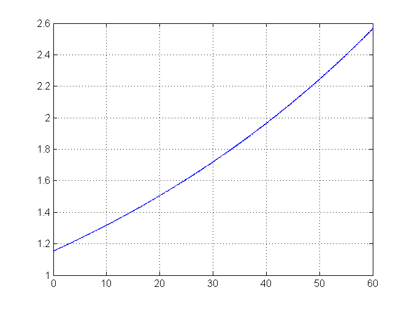
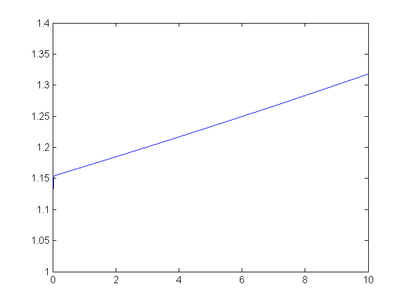
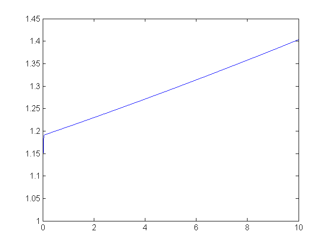
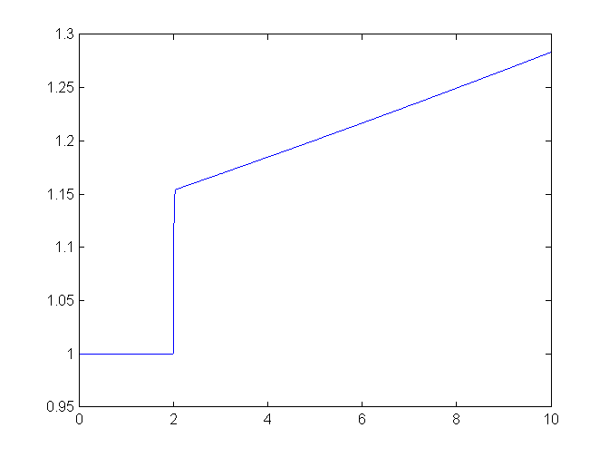
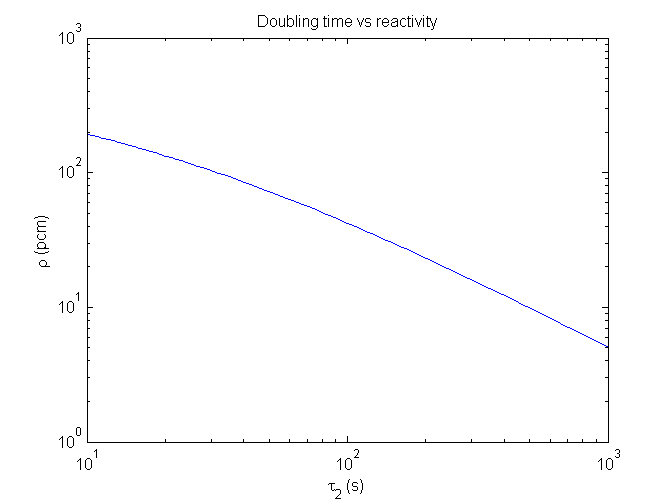
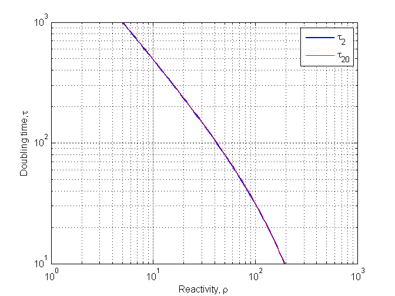

Contents
Exercise 10.1 Use the m-file pointk.m and ode45 to simulate the response when the excess reactivity is 80 pcm.
al=log(2)/8;
beta=0.00600;
L=5e-5;
y0=[1;beta/al/L];
[t,y]=ode45(@pointk,[0 60],y0);
figure
plot(t,y(:,1))
grid

10.2 Define the A-matrix for raa=80 pcm and calculate the eigenvalues.
L=5E-5;
raa=0.00080;
A=[(raa-beta)/L al/L
beta -al];
ee=eig(A)
t2=log(2)/ee(2)
ee =
-104.1000
0.0133
t2 =
52.0500
10.3 Use the options to get rid of the shaggy look.
options=odeset;
options.RelTol=1e-5;
[t,y]=ode45(@pointk,[0 10],y0,options);
plot(t,y(:,1))
figure(gcf)

10.3 alternative
[t,y]=ode23s(@pointk,[0 10],y0);
plot(t,y(:,1))
figure(gcf)
10.4 Pass in al and beta as input arguments to pointk. Run with beta = 500pcm
[t,y]=ode45(@Ex10_4,[0 10],[1;0.00500/al/L],options,al,0.00500);
plot(t,y(:,1))
figure(gcf)

10.5 Write a function fcn_raa that specifies the reactivity and pass in as a function handle to pointk
[t,y]=ode45(@Ex10_5,[0 10],y0,options,al,beta,@fcn_raa);
plot(t,y(:,1))
figure(gcf)

10.6 Use the function dub2raa to plot the reactivity vs doubling time for t2=10 to t2=1000 s.
t2=logspace(1,3,100);
raa=dub2raa(t2);
loglog(t2,raa);
xlabel('\tau_2 (s)');
ylabel('\rho (pcm)');
title('Doubling time vs reactivity');

10.7 Use the function dub2raa and fzero to create the inverse function raa2dub: t2=raa2dub(raa)
t20=raa2dub(raa);
figure
h2=loglog(raa,t2);
set(h2,'linew',1.5)
hold on
loglog(raa,t20,'r')
legend('\tau_2','\tau_2_0')
xlabel('Reactivity, \rho')
ylabel('Doubling time, \tau')
grid
